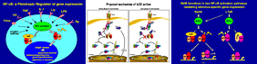

News Archives : 2006 : David Baltimore to Deliver Bloch Lecture
by Jim Henle
September 15, 2006

click above for slide show
Baltimore’s identification of the enzyme reverse transcriptase and the retroviruses equipped with it resulted in his sharing the Nobel Prize in Physiology and Medicine with Howard Temin and Renato Delbecco in 1975. Since then, he has continued pioneering work in immunology; his most recent research has included applications of stem cells to immunotherapy and work on the regulation of the innate immune response.
In addition to performing his research, Dr. Baltimore has held a multitude of significant posts: he has been Director of the Whitehead Institute for Biomedical Research (1982-1990), President of the Rockefeller University in New York (1990-1991), has chaired the NIH AIDS Vaccine Research Committee and in 1997 became President of the California Institute of Technology. He is currently President Emeritus and Robert Andrews Millikan Professor of Biology at Cal Tech.
Among Dr. Baltimore’s many honors, in addition to the Nobel Prize, are the National Academy of Sciences US Steel Award in Molecular Biology, in 1974 (he was elected Member of the NAS in the same year), the National Medal of Science (1999), the American Medical Association Scientific Achievement Award (2002) and the Einstein Medal (Israel Academy of Sciences and Humanities, 2004). He has been elected Member of the American Academy of Arts and Sciences, Fellow of the American Association for the Advancement of Science, and Foreign Member, The Royal Society (England).
Baltimore is a graduate of Swarthmore College; he continued his studies at MIT and then The Rockefeller University, where he received his PhD in 1964. Throughout his career, his broad commitment to science has been indicated by his frequent participation in advisory panels and his many consultancies; his presence has been felt at many levels in the scientific community, from basic research to the establishment of science policy.
The Bloch lecture, sponsored by Pfizer, honors Harvard faculty member and Nobel-prize recipient Konrad Bloch (1912-2000), a pioneer in the field of cholesterol and lipid metabolism.